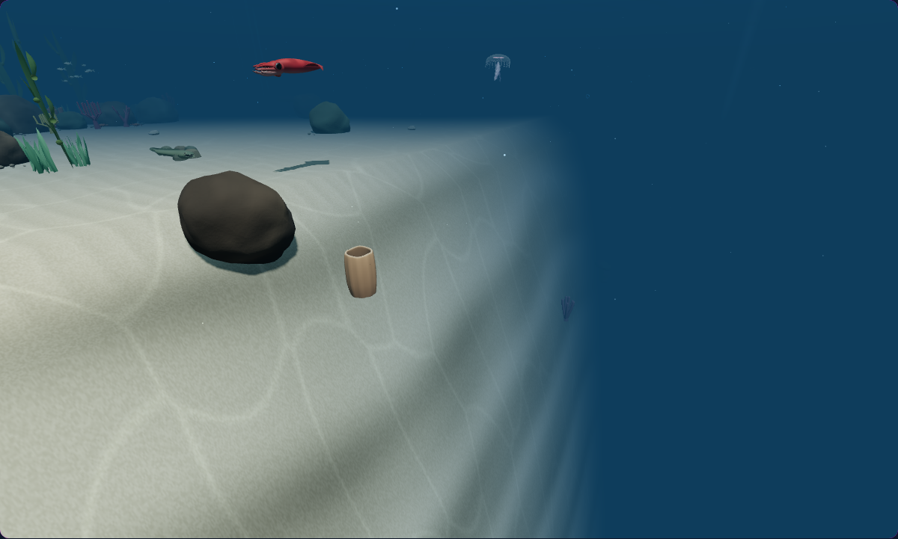
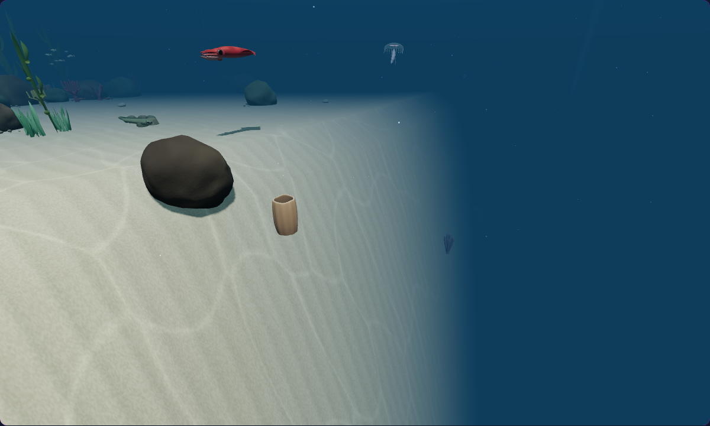

Where the reef falls away.
Exposed stone, weathered layers, and cool basin silt give the reef drop-off a stronger sense of depth. Explore matched captures from the shallow shelf to the deep seafloor.


BeforeEnhancedDrag the slider or focus it and use the arrow keys. Home and End reveal either version.
A comparison image could not load. Choose another view or reload the page.
Diagnostic camera in the actual paused underwater scene; native terrain, fog and depth lighting.
Exposed shelf
Steep terrain reveals darker stone, while gentler shoulders keep a softer veil of sand.
Weathered layers
Rock strata and uneven weathering follow the world height, helping the drop-off read as a connected geological surface.
The deep seafloor
Cooler silt gives the basin its own character. The shallow reef retains its existing surface treatment.
The Hunt view uses the normal native simulator camera. All shelf and basin studies use explicitly overridden diagnostic cameras in the actual scene; their captions reproduce the exact capture scope. Depth lighting follows controlled horizontal placement and actual native Z descent. The night study advances the simulator clock. The derivatives-disabled view is a deliberate shader test, not evidence from fallback hardware. Desktop captures use Humboldt squid with balanced quality; phone captures use common octopus with low quality and reduced motion, through viewport and touch emulation. Native receipts record shader compilation, retained resources, descent, floor retile, and cleanup checks. Before capture receipt · Enhanced capture receipt. Changes remain uncommitted.